Afim de facilitar e agilizar os atendimentos prestados pelo
Centro de Operações à equipe de campo , foi desenvolvido a ferramenta
Efika CO Mobile_.
Nesta ferramenta os colaboradores poderão
verificar as facilidades do cliente e realizar configurações de forma autônoma e ágil sem a necessidade
de entrar em contato com o Centro de Operações.
Para realizarmos o acesso à ferramenta
Efika CO Mobile_ devemos abrir o navegador de internet e digitar o seguinte endereço:
http://vivo.tl/efikamobile
Na tela de
Boas Vindas insira a
Sua Matrícula e a Senha de rede e clique em
Entrar
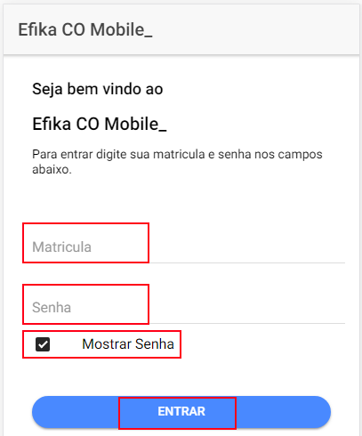
Na tela de acesso, além de termos a opção de inserir a instância a ser tratada e iniciar a consulta,
temos o
Mural de Avisos, onde serão postadas as novidades sobre o aplicativo. Em destaque temos a
Ativação de SIP
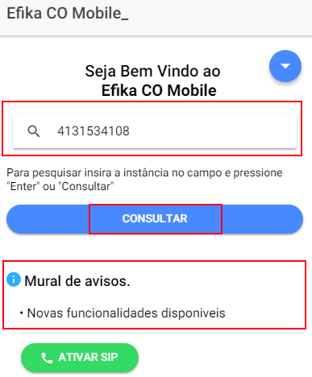
Ao clicar em
Consultar, aguarde o carregamento da tela de dados.
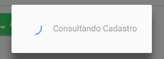
Localizado o cliente, será apresentado a tela de
Menu, onde poderemos realizar
diversas operações.
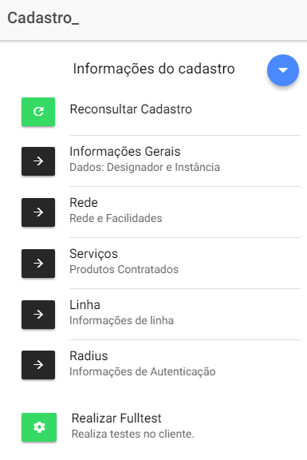
Esta opção nos permite realizar uma nova busca do cadastro do cliente, atualizando assim as informações caso haja alguma alteração;
Nesta opção podemos confirmar o cadastro do cliente sendo eles:
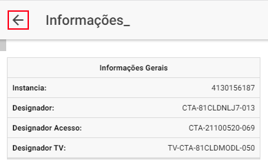
Esta tela nos informa:
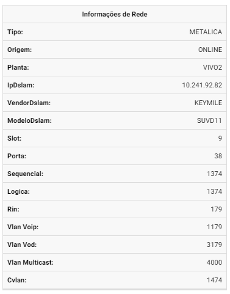
Acessando o campo
Serviços, teremos as informações referentes a:
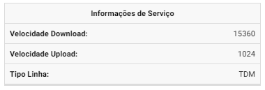
Para verificarmos as informações referentes ao serviço de linha do cliente utilizamos esta opção, tendo como resultado:
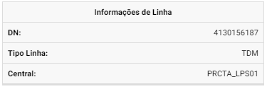
Aqui teremos as informações relacionadas ao Radius, sendo:
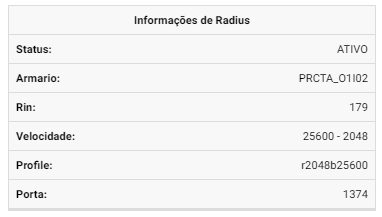
Esta ferramenta é responsável por realizar o checklist e validação dos parâmetros e configurações nos serviços do cliente.
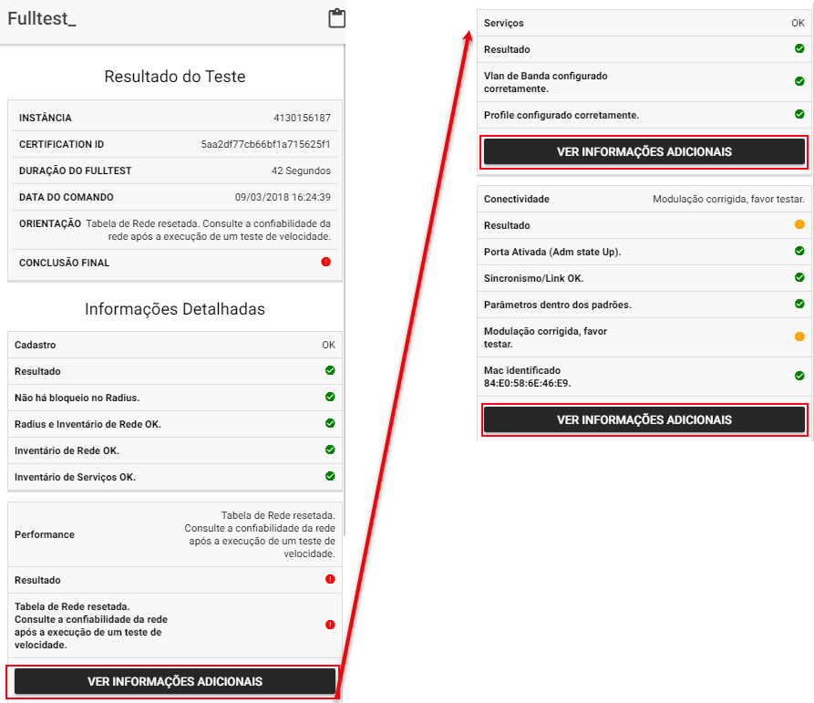
A validação nos permite:
Na parte Superior temos um botão correspondente a uma
Seta para baixo.
Ao clicar sobre ela teremos:
Oculta os botões adicionais.
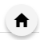Volta a tela inicial, os resultados da consulta atual serão perdidos.
Desloga do sistema.
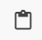Copia as informações relevantes ao atendimento a serem coladas no Checklist.
Na parte inferior do
Efika Co Mobile temos os Botões adicionais, estes possuem suas funções descritas abaixo.
Ainda não atribuída função a esta tecla
Caso tenha realizado o Fulltest, esta tecla irá voltar para a tela de
Informações do Cadastro de forma rápida.
Com a mesma função da tecla anterior, após a realização do Fulltest, esta Tecla irá direcionar para
a tela de
Fulltest de forma rápida.
Esta função está habilitada apenas para clientes
Vivo¹.
Ao clicar no botão será aberto a tela de formulário para ativação de SIP, o qual será encaminhado
a equipe de São Paulo para ativação da linha.
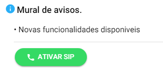
Formulário
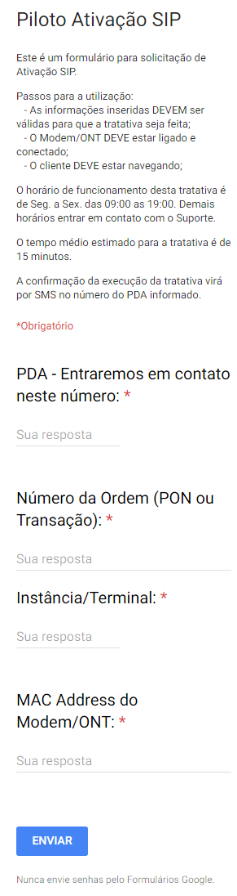